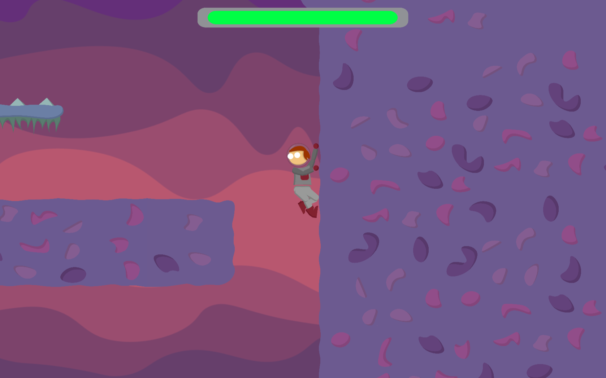

How I keep myself busy
- Small website to connect my various social media accounts
- Made with React and Next.js, hosted on Vercal
- Integrated Framer-Motion to create lively buttons and a more reactive design
- A Discord bot written in JS, then re-written in Python, that interacts with the Discord and YouTube API to play music in group calls.
- Manages downloads efficiently to avoid repeat downloads and to use as little disk space as possible
- Responds to discord emotes, creating a simple user interface
- Short 2D platformer game made over 2 weeks as a part of a game jam.
- Made with Unity and C#, built on an object orientated, expandable codebase
- Stared as Father March and John Brooke in the clubs production of Little Women
- Stared as Nick Bottom in the clubs production of A Midsummer Night's Dream
Korah C.V.S
- Produced, organized, edited and hosted my school's Holiday Concert video.
- Video production and staging of the school's Musical Production
- Created recording setup and recording software guides for people filming parts at-home
- Returned in 2022 to manage lighting in school production